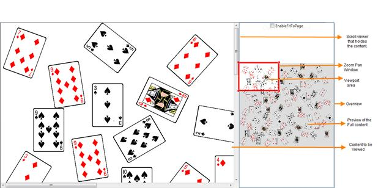

The Overview control enables you to focus a particular area of the entire content. It displays a preview of the entire content with a ZoomPan window. The ZoomPan window is a resizable red rectangle, which helps you focus the required area.
Use Case Scenarios
Users can view the entire content of a diagram in a preview window. This will help the user to navigate to a particular position of the page.
Appearance and Structure of the Control

Figure 1204: Overview Control
 Properties
Properties